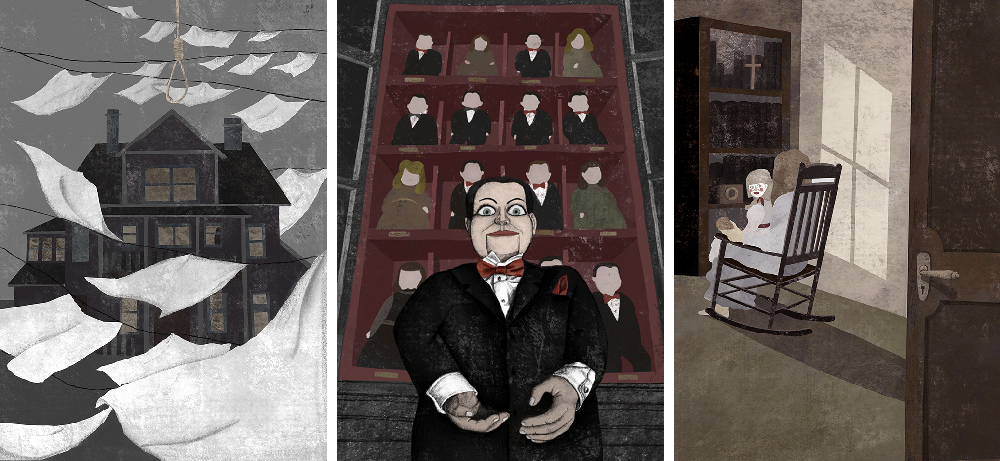
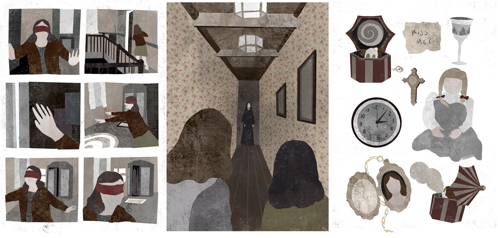

the Conjuring

作品介绍
My project is inspired by the horror movie "TheConjuring" series. Horror movies are myfavourite. One of the genres of Huan's movies, in myopinion, a good horror film is not just aboutshowing the surprise. Visual wonders such as scare, strangeness,violence, etc. are more cleverly mobilising theemotions of the audience. A strong tension is formed between the knowntension and the unknown shock. I believe The "The Conjuring" series is a good horror film. Director James Wan is in this series. It no longer relies on blood plasma and violence,but focusses more on narrative and horroratmosphere. Make, for example, use a small scene, let thecamera move close to the subject, and give theaudience a strong Enter the feeling, or shoot from some specialangles, giving people a sense of concealmentand peeping. Jue, and cleverly use sheets, dolls, music boxesand other items to draw out the soul, etc.In this project, I transformed the scene thatimpressed me more deeply in "The Conjuring"into an insert Painting, try to transform film language intopainting language, from composition, colour andother aspects Create an atmosphere of terror. Finally, I made amovie hand on the basis of the series ofillustrations. Book, let more people know about the "TheConjuring" series and horror movies.
